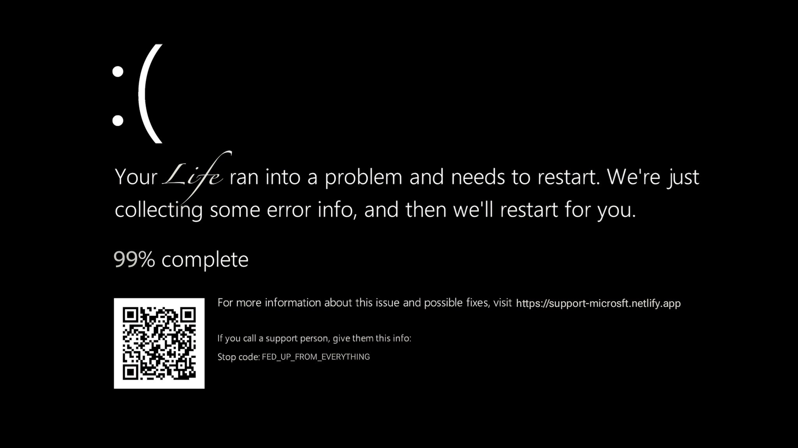

Resolving Black Screen Errors in Windows
This humorous parody guide walks you through fixing black screen issues when your PC – or you – have simply had enough of life's processes running wild.
Basic Troubleshooting
🧠 Safe Mode (a.k.a. Emotional Time-Out Mode)
When everything in your relationship crashes and goes dark, maybe it's time to reboot into Emotional Safe Mode. This isn’t about ignoring your partner — it’s about turning off all third-party noise. In Safe Mode, only the essential emotional drivers load: trust, empathy, and maybe coffee. No exes, no drama group chats, no "What if they liked that photo?"—just raw, uninterrupted conversation. Try sitting down without distractions and talking like two humans who once laughed over spilled pasta. If you function better in this stripped-down mode, your problem wasn’t the relationship — it was external interference. A clean reboot might not fix everything, but it can give clarity. And hey, even your PC needs a break to start fresh — so why shouldn’t your heart?
💽 Driver Conflicts (a.k.a. Trust Issues & Compatibility Errors)
Your PC isn’t the only thing suffering from driver conflicts — relationships crash too when key emotional drivers aren’t compatible or are outdated. Maybe you've been using an old version of Trust 1.2 or trying to patch over Jealousy.exe with quick fixes. Update your emotional firmware: install Communication 4.0, run Compatibility Mode, and remove third-party viruses like insecurity and pride. Often, arguments stem from drivers that never synced in the first place. You’re both trying to run on different emotional operating systems. The fix? Sit together, audit the emotional hardware, and perform a system update — not just on your device, but on your understanding of each other.
📦 System Restore (Back to When You Both Laughed)
Sometimes, life throws a system-wide error and suddenly you're both frozen — staring blankly at each other like a PC stuck on a black screen. That's when you need System Restore, not just on your device, but on your relationship. Go back to a time when things worked: when texts felt exciting, when movie nights didn’t end in passive-aggressive popcorn throwing, and when "we need to talk" wasn’t always followed by buffering silence. Think of emotional restore points — moments like your first walk, your inside jokes, or that late-night biryani at 1 AM. Revisit, reconnect, and reboot. Sometimes progress is made by going back.
⚠️ Out of RAM (Really Angry Moments)
Your brain has tabs open from three arguments ago, unread emotional messages, and background apps like “Overthinking,” “Work Stress,” and “That Thing They Said in 2022.” Guess what? You're officially Out of RAM — Really Angry Moments. At this point, even your internal processor is overheating, and the relationship monitor goes black. You’re not broken — just overloaded. What you both need is a forced shutdown of pride, a cooling system called “Take a Walk,” and maybe a firmware upgrade titled “Let’s Talk Calmly 3.0.” Clear your emotional cache. You’ll be amazed at how much faster things run when you close the 27 tabs in your mind.
Advanced Troubleshooting
-
🧹 Clean Boot (a.k.a. Let’s Start Fresh):
Sometimes, there’s too much emotional startup — old fights, passive-aggressive background processes, or memory-hogging expectations. A clean boot means starting your relationship with only the essentials: respect, communication, and maybe Netflix. Remove unnecessary triggers by talking it out calmly. Hide all non-essential emotional services and disable drama from launching at boot. -
🛠 System File Checker (a.k.a. Fix the Trust Issues):
If your bond starts crashing, it may have corrupted files — like broken trust or unspoken expectations. Open a calm conversation window (Admin mode, preferably after coffee) and runsfc /scannowin the relationship. This scans for damage and tries to repair it. If issues persist, runDISM(Deep Introspection & Soul Maintenance) to recover from deeper emotional damage. -
🔌 Reassign Display Output (a.k.a. Acknowledge Each Other Again):
Sometimes the connection is fine, but you're both projecting in different directions. TapWin + Ctrl + Shift + Bon the relationship keyboard — it's the emotional “wake up” beep. Maybe your partner’s still listening, but just didn’t know where to look. Reset the emotional display driver. Stop projecting into the void. -
📜 Check Event Logs (a.k.a. Read the History):
Go to the Event Viewer of your heart and check what triggered the last emotional BSOD. Under "System," you’ll see: “Failure to communicate,” “Unmet expectations,” or “Didn’t reply to goodnight texts.” These logs are there. Review them. Learn. Don’t just clear the cache — understand what caused the crash. Otherwise, the loop continues.